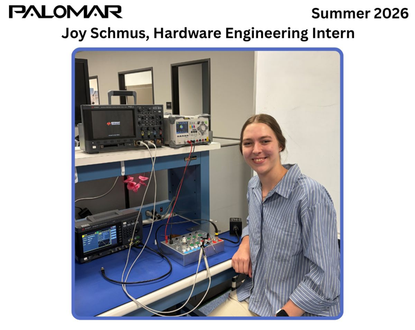

Test Box for Characterizing an Aerial Refueling Amplifier

Overview
Palomar needed to interface its system with an externally sourced Aerial Refueling Amplifier used in the client's existing equipment. Because the amplifier's behavior and interface were not fully understood, I developed a test setup based on the functional test schematic in MIL-DTL-38449D. I sourced the required components, created the wiring diagram, and helped build the physical test box.
Approach
I used the test box to exercise the amplifier's controls and verify its behavior against MIL-DTL requirements, including clarifying behaviors the specification left ambiguous. I then used oscilloscopes, waveform generators, DMMs, and an Audio Precision analyzer to characterize its signal response and levels.

Results
The characterization data informed the hardware interface requirements for integrating the amplifier into Palomar's system, and I contributed to preliminary interface designs based on the measured signal behavior.